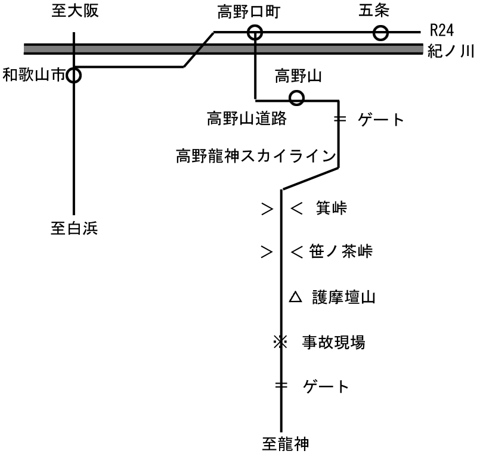
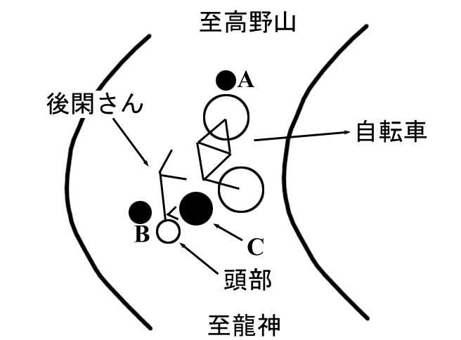

後関杯富士スバルライン タイムトライアル 沿革
後関杯
昭和５９年３月２０日、当サークル会長後関英明さんは、南紀をツーリング中、高野龍神スカイラインにおいて、不幸な事故(後述)により亡くなった。
当時、当サークルは以後の活動方針において少なからずもめた。
「うちのサークルは楽しいものだが、同時に危険なものでもある。我々は無責任にも楽しい面白がりを強調して、メンバーを勧誘し、その上安全対策を怠って、漫然とこのような自体を招いたのではないか？」
後関さんの事故は、万に一つの不幸な偶然によるものであったが、当時のメンバーの共通の反省は上のようなものであったと思う。以後どうするか？サークル解散論、新歓自重論もでた。しかし、サークル存続の方向で検討することがメンバー全員の希望であり、そのためにも新歓活動も行うべきだろうと言うことで、安全対策の強化と４月定サイの延期の他は従来通りの活動を続けると言うことになった。ただ、特に当時のメンバーには、その際の反省が忘れられるようなことがあってはならないという思いが強かった。
一方、後関さんのご両親は、後関さんが生前打ち込んでいたこのサークルに百万円の寄付をなさりたいという御意向だった。我々は後関さんを忘れぬよう、そして、あのときの反省を忘れぬよう寄付金を用いようではないか、と言うことになり、サークルにおいて長く受け継がれるべきものが考えられた。多くのもののなかから選ばれたのが、「富士スバルラインタイムトライアル」と「新しいサークル車」であった。
それ以前にも数回、各人がスバルラインの登りに要する時間を計り、本人がその記録を技量、体力の目安とし、また、一つの努力目標とすることができるようにスバルラインタイムトライアルは催されてきた。しかしどちらかと言えば競技的要素が少なかった当時のサークル活動の中の公式行事には入らず、OBの好意により催されており、定例化はされていなかった。
これを、後関さんのご両親からの寄付金を資金として、サークルの定例行事とし、永く後関さんの名をサークルにとどめようということになり、スバルラインのタイムトライアルを「後関杯」とし、毎年受け継がれ運営されることになった。
事故について
皆様、ご存じの通り、去る３月２０日（１９８４年）に起こった不慮の事故により、後関君はまだ２０歳という若さでこの世を去りました。
その事故については、３月２４日のミーティングで説明しましたが、当日いらっしゃらなかった方々もいらっしゃると思います。また、このことを後輩に伝えていくためにも、あえて文面化し会報に載せることにしました。皆様にとって忘れたいことでもあるわけで、私としても悩みましたが、あえて以下に事故の状況について書いてみます。（特に、中塚君、増田君にとってつらいこととなりますが、お許しください。）
増田、中塚、後関の三人は、追いコンの次の日の３月１８日の例の大垣行きで東京を発ち、名古屋で近鉄に乗り換え、大和八木で下車する。
この３月１９日は、東京でも雪が降った日であり、吉野・奈良地方もまた雪であった。高野山YH（ユースホステル）で断られたこともあり、３名は吉野へ向かい、そこの民宿で一泊した。一方、私は３月１９日の12:00頃のひかりで、和歌山の竹中氏宅へ。ここで泊まらせていただく。
３月２０日は、両方とも9:00頃に宿泊地を出発、どんよりとした曇の天気であった。高野山道路を登っていくと、高野山に近づくにつれ、雪が多く残っていた。高野山到着は両方とも1:00頃。私の方がちょっと早かったようだ。高野山は非常に寒く、道路上にこそ雪は残っていなかったが、それ以外のところにはまだ多くの雪が残っていた。そのため、スカイラインには雪が残っていると考えた私は見学もほとんどせず、竹中氏の家で作っていただいた弁当を食べ、2:00過ぎには金剛峰寺前を出た。
スカイラインの方へ行くと見慣れた３台の自転車があったので、まわりを探してみると、食堂から出てきた３人と出くわしたのである。(2:15頃)３人とも龍神へ行くと言うことなので、以後行動をともにすることにした。宿の予約etc.でわりと時間を食い、結局ゲートに着いたのが、2:50頃。ゲートでは、“雪が大量にある。６時間かかる。以前、強引に行ったサイクリストがいて、結局バテ、救援を頼んだことがある。”と言ったことを言われた。これらのことを覚悟していた私たちは、ゲートの係員がそれ以上は言わず、料金をなんの文句も言わず受け取り、車とのやりとりをはじめたいので、出発した。(3:00ちょっと前)
最初は、路肩にちょっと雪がある程度で、路面も乾いており走りやすい道であった。天気も薄日が大さしていた。しかし、高度をかせいでいくうちに、雪が路面を覆うようになり、ゲートから10kmほどの地点から、2kmほどは押さざるを得ない状況になっていた。とはいえ、車がよく通るので、雪は固められており、それほどひどい状況ではなかった。全区間を通じ、この付近が一番ひどく、ここ以外はほとんど乗ることができた。このあたりで雪がぱらついた。ここまで終始後関君は遅れ気味であった。

ここで、スカイラインについて説明しておく。図１の通り、高野山と龍神温泉を結ぶ道である。この道は、秩父のグリーンラインのように尾根づたいの道である。従って峠がピークと言うわけではない。（現に箕峠の手前に一つピークがある。）そして、箕峠から上りとなり、護摩壇山が最も高く、そのあとは下りである。
さて、私たちは先が長いこともあり、ほとんど休憩もとらず走っていた。箕峠付近で“護摩壇山8km”という表示があった地点で休憩をとった。護摩壇山には、17:45〜50頃に到着し、18:00頃まで休憩した。このころになると、かなり暗かったが、まだ路面はしっかりと把握できる状態であった。護摩壇山では、各自自転車に付着していた氷（雪がすでに氷となっていた）を落とした。泥よけに氷がつまりサイドを切る危険があったからである。また、ディレーラーも凍り付き、うまく動作しない状態であった。フリーの歯にも氷がつき歯飛びを起こしていた。このように非常に寒い状態であった。
護摩壇山からの下りではかなりの雪が残っており、アイスバーンになっているところも多々あった。まず、私が一回、ついで３人が同時に一回こけた。このため、非常にゆっくり下ったため雪が路面からなくなる頃にはほとんど真っ暗となり、各自バッテリーライトを頼りに走っていた。私以外３人のバッテリーライトの電池はあまりなかった。下りは４人がほぼ一段となっていた。ゲートは午後５時で閉鎖されるので、護摩壇山で会った車を最後に、以後車とは会わなかった。
順調に走っていると、いきなりガタガタとした振動にあい、落石があることが分かり、停車した。ここで後関君の後輪がパンクした。17:30頃だと思われる。パンク修理に１５分くらいかかり出発。増田、私、中塚、後関の順であった。後関君は出発に手間取り、私、増田と、中塚、後関の間はかなり開いていた。この１回目の落石からわずか５００ｍぐらいのところで事故は起こった。時間は18:50頃であった。龍神側ゲートから約5kmの地点である。見通しの利かないカーブとなっている。
報道によると、後関君は落石に当たったように伝えられたようであるが、事実は異なる。ＢＣは同じ石が２つに割れたものであることが確認された。ただし、Ｂ、Ｃがつの石であったがそれが２つになったのは自転車が当たったためであるか、落ちた衝撃によるものかは、分からない。また、後関君が最後を走っていたので正確なことは分からない。以下は、警察の最終的判断によるものである。

おそらく、Ａの石に気がついた後関君は、ブレーキをかけスピードを落としてＣの石にぶつかったものと思われる。（自転車と体がほとんど離れていないことからも、スピードはほとんど出ていないと思われる）何故ぶつかったかは不明である。（残り３名については後述）
その衝撃で、前輪が回転してしまい、右側に倒れた。また、その衝撃で石は最も鋭利な部分を上に向けた。自転車はフロントバッグで自転車を支えるような状態で倒れ、衝撃で若干前に投げ出された後関君は、Ｃの石の鋭利な部分に右の耳の上の部分をぶつけてしまった。普通なら方から落ちるところなのに、Ｃの石が大きかったためにより頭蓋骨陥没骨折を起こした。これが致命傷となりほとんど即死だったそうである。ここ以外には外傷は全くないのである。自転車もＣにぶつかった際にタイヤとリムを傷つけた以外には、転倒の際に左のブレーキが曲がったくらいのものである。（次の日、東京に帰るために輪講した際、フロントディレーラーのサイクロンマークが光っていたのにはどうしようもなくやるせなかった。）
この前後の私たち３人の行動について書く。私たちはおそらくＡと思われる石を見つけ、大きく曲がり右側を通ったため、Ｂ、Ｃには気がつかずに走っていた。（なお、落石はここ以外にもあり、ゲートまでに３、４箇所あったそうだ）
第一発見者は中塚である。後関君の前120m程度前を走っていたと思われる中塚君は、後関君の倒れる音を聞き、声をかけたが返事がなかったので、戻ってみると、後関君は頭から血を出していて倒れ、もう意識はなかった。そこで先行している私たちに報告した。私はすぐ引き返し、増田も引き返した。中塚はそのままゲートまで行き、警察に連絡した。私が戻ったときには、巣で日は泊まっていたが、意識はなかったので、動かすことはできなかった。谷君が秋に事故を起こしたときにも最初意識がなかったと聞いていたので、まさか死亡するなどとは思っていなかった。そうこうする内に増田も戻ってきて、２人で救急車が来るのを待った。公団の方が、ゲートから来てくれ、冷えるとMaxいけないと言うことで、布団を持ってきてくださった。雪がバラついていた。
19:00過ぎには、高野山の警察には連絡が入っていたが、龍神には救急車もなく、駐在さんがいるだけなので、高野山から来るのを待たざるを得なかった。救急車が到着したのが、21:00頃。増田についていってもらった。
私と中塚は現場検証で、23:30頃までいた。自転車は、公団の人にゲートまで持っていっていただいた。（次の日高野山まで運んでいただいた）高野山の警察に着いたのは、1:00を過ぎていた。そのときには、増田も警察におり、最悪の事態であることを察知した。（最もつらい役目を増田に押しつけてしまい、済まないと思っている。）この日は、高野署の応接室で泊まった。
翌２１日は、午前中、中塚は現場検証へ、私と増田は調書を取られていた。私は午前中で終わったが、増田は午後までかかり、中塚のは午後７時頃までかかった。外は終始雪であった。ご家族の方々は、昼ごろ到着し、４時前に後関とともに、東京に帰った。東京には午前２時ごろついたそうである。（新藤君が出迎えてくれたそうである）この事件はNHKのニュースで流れたそうで、池田さん、舘谷さんから電話が9:00頃には高野山の方に入り、池田さんと新藤を中心とした情報網がいち早く作られ、春合宿の中止も決まった。できれば２１日中に帰りたかったが、調べに時間がかかり結局高野泊まりとなった。
翌２２日、増田、中塚の２人は7:00頃高野山を出発。私は、２人の自転車を送ることや警察への挨拶で手間取り、11:00頃まで高野山にとどまることになってしまい、結局お通夜には間に合わなかった。
２３日、11:00〜12:00 告別式
以上がこの事故の概要です。
お問い合わせ
入会や各種お問い合わせについては
公式SNSのDMにてご連絡ください。
- Twitter: @nakayoshicycle
- Email: ncyc-info@nakayoshi.com
- Instagram: nakayoshi_cycle